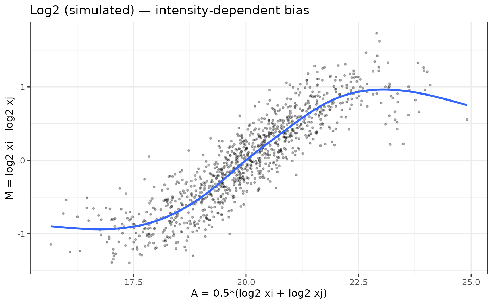
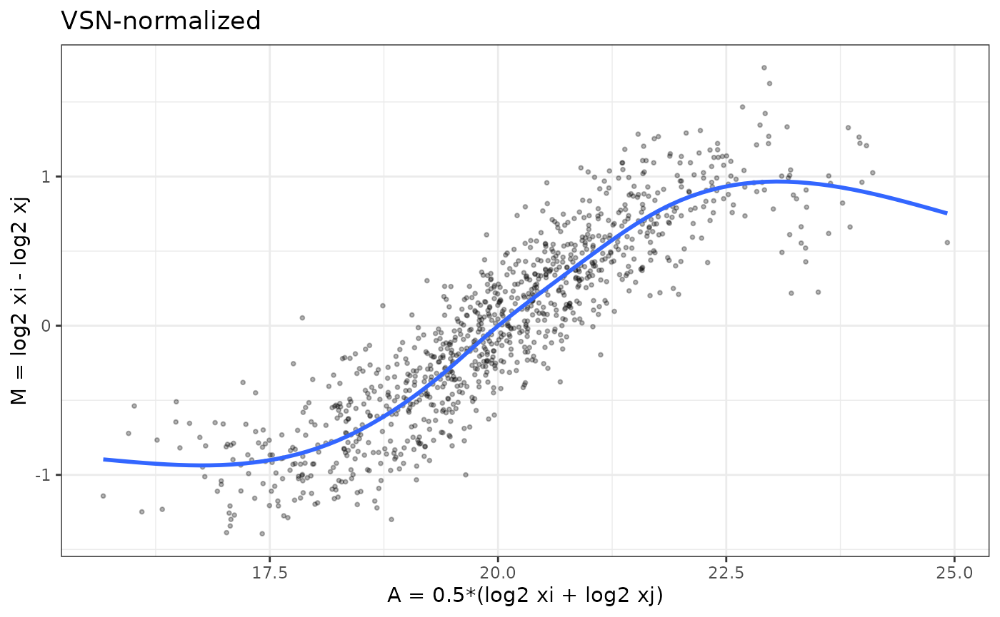
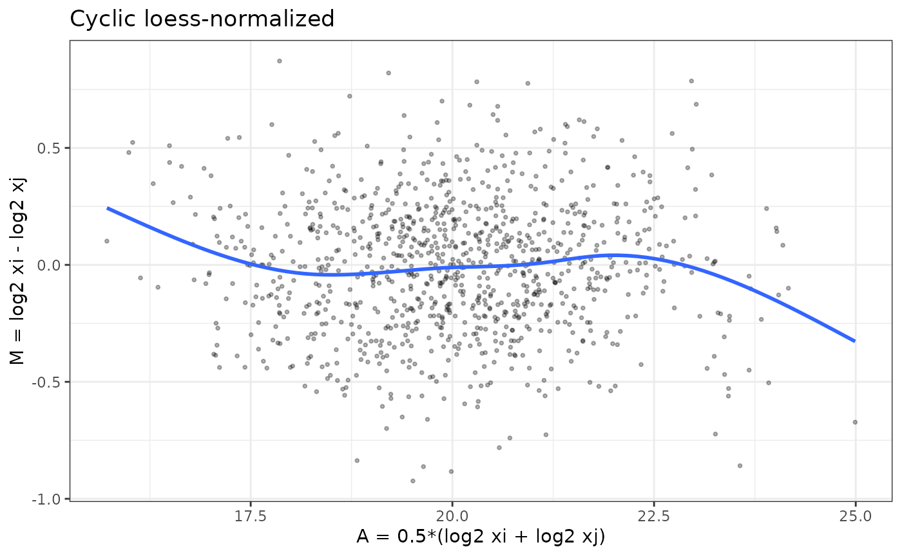
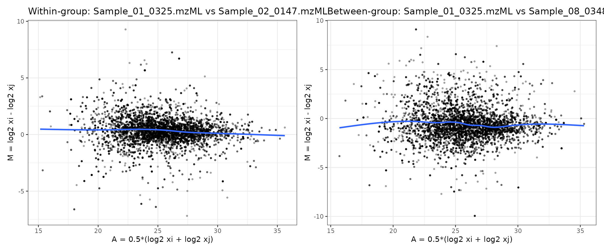

proteoDA v2.0 Normalization and Imputation
Byrum Lab
March 20, 2026
proteoDA_v2.0_Norm.RmdIntroduction
Proteomics data are shaped by a mixture of biological signal and technical variation introduced by sample preparation, instrument drift, ionization efficiency, and missingness patterns.
Mass spectrometry intensities often show:
- Zeros and missing values (non-detects)
- Global scale differences between samples (loading / instrument drift)
- Intensity-dependent biases (curved M–A plots)
- Heteroscedasticity (variance depends on mean)
Before differential abundance analysis, it is crucial to:
- Handle zeros and missing values
- Select and evaluate a normalization method
- Decide whether imputation is required
proteoDA v2.0 provides a structured workflow and
built-in diagnostics to help users make transparent normalization
choices.
Handling Missing Values and Zeros
Why zero values must be treated carefully
In proteomics pipelines, zeros often represent non-detected features rather than true zero abundance. Treating these zeros as real values can:
- Artificially depress group means
- Inflate variance
- Produce exaggerated fold-changes
limma’s behavior:
By default, limma treats NA values in the expression
matrix as missing data. For each protein, lmFit():
- Treats NA as missing values
- Excludes missing samples per protein
- fits the linear model using only the available intensities
- Compute correct residual degrees of freedom in
eBayes()
Proteins can therefore have different numbers of samples. If an
entire group is missing, that coefficient/contrast becomes non-estimable
and limma returns NA for logFC and p-values.
eBayes() uses the correct residual degrees of freedom for
each protein.
In contrast, numeric zeros are treated as real values.
If zeros in the input matrix actually represent “not detected” or “below
detection limit”, including them as true intensities can:
- Pull group means toward zero
- Inflate within-group variance
- Create exaggerated fold-changes when one group has many zeros and the other does not
Thus, it is preferable to convert zeros to NA before
modeling.
Converting zeros to missing
proteoDA provides two helpers:
zero_to_missing() — convert zeros (or other thresholded
values) to NA before normalization and modeling
missing_to_zero() — optional post-analysis conversion.
Used if a downstream tool requires a fully numeric matrix, such as
PCA.
library(proteoDA)
## Locate the Lou 2023 benchmark directory
# 1) Try the installed-package location (works after install/build_vignettes)
bench_dir <- system.file("extdata/lou2023_benchmark", package = "proteoDA")
# 2) During development with devtools::load_all(), system.file() may be ""
# so fall back to the source tree: ../inst/extdata/lou2023_benchmark
if (bench_dir == "") {
bench_dir <- normalizePath(
file.path("..", "inst", "extdata", "lou2023_benchmark"),
winslash = "/",
mustWork = TRUE
)
message("Using local development benchmark directory: ", bench_dir)
}
# Sanity check
stopifnot(dir.exists(bench_dir))
# Override key input file paths to use the package system files
raw_file <- file.path(bench_dir,"raw.rds")
DAList_raw <- readRDS(raw_file)
str(DAList_raw)## List of 7
## $ data :'data.frame': 9089 obs. of 17 variables:
## ..$ Pool_1.mzML : num [1:9089] 12128420 34858280 83996110 70885410 25028960 ...
## ..$ Pool_2.mzML : num [1:9089] 10100400 37054710 99612510 77754340 21329540 ...
## ..$ Pool_3.mzML : num [1:9089] 8.05e+06 3.93e+07 1.07e+08 7.68e+07 2.67e+07 ...
## ..$ Sample_01_0325.mzML: num [1:9089] 6400703 88847090 42280640 73468270 59603060 ...
## ..$ Sample_02_0147.mzML: num [1:9089] 9.80e+06 4.02e+07 1.79e+08 1.19e+08 1.86e+07 ...
## ..$ Sample_03_4085.mzML: num [1:9089] 2.15e+06 3.98e+07 1.94e+08 4.55e+07 6.48e+06 ...
## ..$ Sample_04_0039.mzML: num [1:9089] 767043 39975930 49979340 69640920 14402970 ...
## ..$ Sample_05_5198.mzML: num [1:9089] 7872038 42115980 39133770 75263440 15958740 ...
## ..$ Sample_06_7066.mzML: num [1:9089] 2.38e+06 2.47e+07 3.82e+07 1.03e+08 3.52e+07 ...
## ..$ Sample_07_0909.mzML: num [1:9089] 14989790 23234440 24654850 71260680 19612370 ...
## ..$ Sample_08_0348.mzML: num [1:9089] 17759460 1862563 16704030 60429110 77828310 ...
## ..$ Sample_09_7028.mzML: num [1:9089] 9190121 28740020 51880990 83455310 36625060 ...
## ..$ Sample_10_2119.mzML: num [1:9089] 1747821 9271566 22337610 27706830 5416264 ...
## ..$ Sample_11_6501.mzML: num [1:9089] 7.34e+05 7.35e+07 4.19e+08 1.04e+08 1.75e+07 ...
## ..$ Sample_12_9999.mzML: num [1:9089] 1.10e+06 4.04e+07 1.10e+08 5.53e+07 1.13e+07 ...
## ..$ Sample_13_1014.mzML: num [1:9089] 12225410 35323730 74030230 67913170 22483620 ...
## ..$ Sample_14_1059.mzML: num [1:9089] 11632510 14474530 72548530 87962450 18911320 ...
## $ annotation:'data.frame': 9089 obs. of 4 variables:
## ..$ uniprot_id : chr [1:9089] "A0A087X1C5" "A0A0B4J1Y9" "A0A0C4DH29" "A0AVT1" ...
## ..$ protein_info : chr [1:9089] "sp|A0A087X1C5|CP2D7_HUMAN Putative cytochrome P450 2D7 OS=Homo sapiens OX=9606 GN=CYP2D7 PE=5 SV=1" "sp|A0A0B4J1Y9|HV372_HUMAN Immunoglobulin heavy variable 3-72 OS=Homo sapiens OX=9606 GN=IGHV3-72 PE=3 SV=1" "sp|A0A0C4DH29|HV103_HUMAN Immunoglobulin heavy variable 1-3 OS=Homo sapiens OX=9606 GN=IGHV1-3 PE=3 SV=1" "sp|A0AVT1|UBA6_HUMAN Ubiquitin-like modifier-activating enzyme 6 OS=Homo sapiens OX=9606 GN=UBA6 PE=1 SV=1" ...
## ..$ accession_number: chr [1:9089] "sp|A0A087X1C5|CP2D7_HUMAN" "sp|A0A0B4J1Y9|HV372_HUMAN" "sp|A0A0C4DH29|HV103_HUMAN" "sp|A0AVT1|UBA6_HUMAN" ...
## ..$ molecular_weight: chr [1:9089] "57 kDa" "13 kDa" "13 kDa" "118 kDa" ...
## $ metadata :'data.frame': 17 obs. of 4 variables:
## ..$ data_column_name: chr [1:17] "Pool_1.mzML" "Pool_2.mzML" "Pool_3.mzML" "Sample_01_0325.mzML" ...
## ..$ sample : chr [1:17] "P1" "P2" "P3" "S325" ...
## ..$ batch : int [1:17] 1 1 1 1 1 1 1 1 1 1 ...
## ..$ group : chr [1:17] "Pool" "Pool" "Pool" "normal" ...
## $ design : NULL
## $ eBayes_fit: NULL
## $ results : NULL
## $ tags : NULL
## - attr(*, "class")= chr "DAList"
DAList_clean <- zero_to_missing(DAList_raw)
# Check results
head(DAList_clean$data[, 1:5])## Pool_1.mzML Pool_2.mzML Pool_3.mzML Sample_01_0325.mzML
## A0A087X1C5 12128420 10100400 8047184 6400703
## A0A0B4J1Y9 34858280 37054710 39324880 88847090
## A0A0C4DH29 83996110 99612510 107389100 42280640
## A0AVT1 70885410 77754340 76753210 73468270
## A0FGR8 25028960 21329540 26742190 59603060
## A0MZ66 10811940 11644230 10496870 20095690
## Sample_02_0147.mzML
## A0A087X1C5 9803543
## A0A0B4J1Y9 40182130
## A0A0C4DH29 179020600
## A0AVT1 119136300
## A0FGR8 18563650
## A0MZ66 11457240Overview of Normalization Strategies in proteoDA v2.0
proteoDA implements eight complementary normalization
approaches, building on the evaluation framework from
proteiNorm (Graw et al., 2020, ACS Omega
5:25625–25633).
| Method | What_it_does | Assumptions | Good_for | Tag_in_DAList |
|---|---|---|---|---|
| log2 | Log2 transform intensities | Logged intensities suitable for linear modeling | Raw intensities needing log scale | log2 |
| median | Center per-sample by median (log2 scale) | Most proteins not changing; median reflects scale | Simple between-sample scaling | median |
| mean | Center per-sample by mean (log2 scale) | Most proteins not changing; mean reflects scale | Simple between-sample scaling | mean |
| vsn | Variance stabilizing normalization (VSN) | Suitable for heteroscedastic data / low intensities | Wider dynamic ranges; many low-abundance proteins | vsn |
| quantile | Force identical distributions across samples | Most proteins not changing; distributional equality | Strong global effects; label-free | quantile |
| cycloess | Cyclic loess (intensity-dependent bias correction) | Smooth intensity-dependent bias between samples | Nonlinear M–A trends; TMT / multi-batch | cycloess |
| rlr | Robust linear normalization | Linear bias removable robustly | Outlier-prone samples | rlr |
| gi | Global intensity scaling (log2) | Samples comparable by total intensity; global scaling valid | Global load differences without strong intensity trends | gi |
| external (e.g., DIANN) | Use upstream normalization; set DAListnorm_method | Upstream method is appropriate/consistent | Pipelines like DIA-NN that already normalized | diann_quan |
Quick decision checklist
Use this to guide early choices:
Already normalized upstream (e.g., Log2 median)? → Set
DAList$tags$norm_method<- “Log2_median” and skip re-normalizing.Clear global scaling differences, no strong intensity trend? →
medianormean.Many low-abundance proteins, strong mean–variance dependence, zeros/near-zeros? →
vsn.Want identical empirical distributions; assume most proteins unchanged? →
quantile.Curved “smile/frown” patterns in M–A plots (intensity-dependent bias)? →
cycloess(cyclic loess) orrlr.Single run with modest variation, mainly load differences? →
gi(global intensity scaling).Highly distinct groups with clear biological effects? → avoid
quantile(may suppress biology)
Simulated Example: Detecting and Fixing Bias Using MA Plots
To make the diagnostics more concrete, we simulate a small proteomics-like dataset with:
- 1000 proteins × 8 samples
- 2 conditions (4 vs 4)
- Mild true differential abundance in ~10% of proteins
- Nonlinear Intensity-dependent technical bias in two samples
Then we compare:
- Log2-transformed data
- VSN
- Cyclic loess
Simulate data with bias
set.seed(123)
n_prot <- 1000
n_samp <- 8
group <- rep(c("A","B"), each = 4)
# base mean on log2 scale
mu <- rnorm(n_prot, mean = 20, sd = 1.5)
# true DE: 10% up in group B
is_de <- rbinom(n_prot, 1, 0.1) == 1
lfc <- ifelse(is_de, rnorm(n_prot, 1, 0.2), 0)
# construct log2 intensities with group effect + noise
log2_mat <- sapply(seq_len(n_samp), function(j) {
g <- group[j]
mu + (g == "B") * lfc + rnorm(n_prot, sd = 0.2)
})
colnames(log2_mat) <- paste0(group, "_", 1:4)
rownames(log2_mat) <- paste0("prot", 1:n_prot)
# add intensity-dependent bias to first 2 samples (e.g. bad run)
bias_fun <- function(x) 0.5 * sin((x - mean(x)) / 2)
log2_mat[,1] <- log2_mat[,1] + bias_fun(log2_mat[,1])
log2_mat[,2] <- log2_mat[,2] - bias_fun(log2_mat[,2])
# convert back to raw intensities for VSN
raw_mat <- 2^log2_matM–A plot helper
ma_plot <- function(mat, i = 1, j = 2, main = "") {
x_i <- mat[, i]
x_j <- mat[, j]
A <- 0.5 * (x_i + x_j)
M <- x_i - x_j
df <- data.frame(A = A, M = M)
ggplot(df, aes(x = A, y = M)) +
geom_point(alpha = 0.3, size = 0.7) +
geom_smooth(se = FALSE, span = 0.7) +
labs(x = "A = 0.5*(log2 xi + log2 xj)",
y = "M = log2 xi - log2 xj",
title = main) +
theme_bw()
}MA plot of Log2 data with bias

The “Log2 (simulated) — intensity-dependent bias” shows an M–A plot for the simulated data before normalization. The blue loess curve has a strong “S-shaped” trend: low-intensity points are biased downward, mid-intensity points upward, and the curve only flattens at the very top of the dynamic range. This is exactly the kind of intensity-dependent bias that can distort fold-changes and p-values if left uncorrected.
- The distinct S-shaped loess curve indicates nonlinear technical bias, the type addressed by cyclic loess.
Comparing VSN and cyclic loess in simulated data
# VSN on raw intensities
vsn_fit <- vsn::justvsn(raw_mat)
# In the current vsn, justvsn() already returns the normalized matrix
log2_vsn <- vsn_fit
# cyclic loess on log2 data
log2_cyc <- limma::normalizeCyclicLoess(log2_mat, method = "fast")M–A plots after VSN and cyclic loess
normalization
p_vsn <- ma_plot(log2_vsn, 1, 2, main = "VSN-normalized")
p_cyc <- ma_plot(log2_cyc, 1, 2, main = "Cyclic loess-normalized")
p_vsn
p_cyc
Interpreting the VSN and cyclic loess normalized MA plots
The VSN-normalized M–A plot shows that variance has been stabilized across the full intensity range, but intensity-dependent bias has not been removed. The blue loess curve still follows the same “S-shaped” trend seen before normalization—indicating that the underlying nonlinear relationship between samples remains.
This behavior is expected: VSN is designed to stabilize
variance, particularly for low-intensity features where raw MS signals
are extremely noisy. It does not attempt to correct systematic, smooth,
sample-to-sample biases. As a result:
- The vertical spread of points is more uniform than in the raw or log2 data.
- But the mean trend (blue line) still bends upward and downward with intensity.
- This confirms that
VSNaddresses heteroscedasticity, not nonlinear intensity-dependent bias.
In contrast, the cyclic loess–normalized MA plot
shows a flat loess line centered on 𝑀=0, demonstrating that
cyclic loess corrects the shape of the M–A curve, whereas
VSN corrects the variance of the data.The point cloud is
more symmetric and, most importantly, the blue loess line is now nearly
flat around 𝑀=0 across the whole A range. This indicates
that cyclic loess has successfully removed the smooth,
non-linear bias between these samples while preserving local
variability.
Together, these plots illustrate why VSN and
cyclic loess solve different problems and can lead to
different normalization choices depending on the characteristics of the
dataset.
-
VSNmainly stabilizes variance across intensities (points look more homoscedastic) but leaves nonlinear bias. -
Cyclic loessdirectly flattens the intensity-dependent curve (loess line ~ 0 across A).
Evaluating Normalization Methods with
write_norm_report()
In real data, you would inspect these plots across several sample
pairs. In practice you will start from a DAList created
from real data.
Here we show the call; you can plug in your own object.
- convert
0values toNAand generate the normalization report
# Assume DAList_raw is constructed from your peptide/protein matrix
# and sample metadata
# 1) Convert zeros to missing if needed
DAList_clean <- zero_to_missing(DAList_raw)
# 2) Run normalization evaluation with multiple methods
write_norm_report(
DAList_clean,
grouping_col = "group", # column in sample_metadata
output_dir = "QC_norm_report",
filename = "norm_eval.pdf",
overwrite = TRUE
)The report includes, for each method:
- Variance metrics (PCV, PEV, PMAD)
- Intragroup correlations and correlation heatmap
- Log2-ratio distributions
- Overlayed MA plots for all sample pairs → reveals global bias patterns quickly
How to interpret variance and correlation metrics
Before looking at MA plots, it is helpful to use the variance and correlation based diagnostics in the normalization report to decide which methods are most promising.
Pooled variance metrics: PCV, PEV, PMAD
The report summarizes within-group variability using:
-
PCV (Pooled Coefficient of Variation)
- Lower PCV → tighter agreement among biological replicates.
- Compare methods: a good normalization should reduce PCV without collapsing biological differences.
- Lower PCV → tighter agreement among biological replicates.
-
PEV (Pooled Estimate of Variance)
- Reflects the average variance across proteins within groups.
- Methods that strongly change the overall scale (e.g. global
intensity, quantile) may shift PEV.
- Look for methods that reduce PEV while still preserving a reasonable dynamic range.
- Reflects the average variance across proteins within groups.
-
PMAD (Pooled Median Absolute Deviation)
- Robust alternative to PEV, less sensitive to outliers.
- Lower PMAD indicates more consistent replicate measurements.
- When PCV and PMAD agree, the ranking of methods is usually reliable.
- Robust alternative to PEV, less sensitive to outliers.
In general, better normalized data will show lower PCV/PEV/PMAD for biological replicates compared to the unnormalized or log2-only versions.
Correlation metrics and heatmaps
The report also includes:
-
Intragroup correlation
- Distribution of Pearson correlations between samples within the
same group.
- Higher intragroup correlations indicate more consistent replicate
profiles.
- Compare medians across methods: good normalization should increase intragroup correlation.
- Distribution of Pearson correlations between samples within the
same group.
-
Intergroup vs intragroup separation
- If intergroup correlations are similar to intragroup correlations, biological groups may not be well separated.
- A useful normalization improves replicate agreement without making all samples look identical.
-
Correlation heatmap
- Shows the full sample–sample correlation matrix.
- Look for:
- Replicates clustering together by biological group
- Absence of strong batch-driven blocks
- No obvious outlier samples with uniformly low correlation
- Replicates clustering together by biological group
- Shows the full sample–sample correlation matrix.
Together, the variance and correlation diagnostics highlight which methods best stabilize replicate measurements and preserve group structure. The overlayed MA plots then provide a complementary view focused specifically on intensity-dependent bias.
How to interpret overlayed MA plots
- Flat loess lines → no intensity-dependent bias
- Symmetric clouds around zero → good normalization
- Curvature → nonlinear bias remains
- Overly tight clustering → over-normalization (e.g., quantile)
- Overlayed MA plots provide a holistic QC view across all samples.
Understanding the Overlaid MA Plots in the Normalization Report
The MA plots shown in the normalization report summarize all pairwise comparisons of samples within the dataset for each normalization method. Instead of visualizing one M–A plot at a time, the report overlays the M–A points from every sample pair into a single panel per method.
This produces a compact view of the overall bias structure across the experiment and allows for quick visual comparison of methods.
Why overlay all sample pairs?
Overlaying all pairwise MA plots is useful because: - It reveals global patterns that may not be obvious from a single sample comparison. - If a normalization method leaves intensity-dependent bias, you will see a curved or tilted trend across the cloud of points. - If a method causes over-normalization, the biological separation between groups may collapse, producing an unnaturally tight cluster around zero. - Consistently centered and homoscedastic MA clouds indicate that the method effectively removes technical differences while preserving real variation.
How to read these panels
Each point represents the log fold-change 𝑀 vs. the mean intensity𝐴for one protein, for one sample pair. Because all sample pairs are plotted together:
- A well-normalized dataset produces a dense, symmetric cloud of
points centered around
𝑀=0. - The loess curve (orange) should be flat, indicating no systematic intensity-dependent shifts across samples.
- Methods that fail to remove bias will show:
- upward or downward drift in the loess curve
- curvature (“smile” or “frown”)
- systematic tilting
- Methods that overcorrect may artificially pull points toward 𝑀=0, erasing biological differences.
In the example shown above:
-
log2,median,mean,vsn,rlr, andgiall produce relatively symmetric MA clouds. -
quantilecan appear tighter because it forces identical distributions, which can suppress biological variation. -
cyclic loessspecifically targets intensity-dependent trends, but if such trends are weak, as in this dataset, the MA structure will look similar across methods.
Why this is more informative than a single MA plot
A single pairwise MA plot only reflects the relationship between two samples, which may look acceptable even when other sample pairs contain strong biases. Overlaying all pairs simultaneously provides a holistic quality check that ensures:
- consistency across the entire dataset
- appropriate scaling in all samples
- no sample-specific distortions that would impact downstream modeling
This approach mirrors what is commonly done in microarray QC pipelines (e.g., limma, affy, and vsn workflows), adapted here for proteomics.
Optional: Creating your own MA plots with ma_plot()
The vignette defines and exports an M-A plot helper function:
ma_plot(mat, i, j, main = "")
# example
ma_plot(expr_log2, i = 1, j = 2, main = "Within-group comparison")
ma_plot(expr_log2, i = 1, j = 8, main = "Normal vs Cancer")Users can apply ma_plot() to:
- inspect specific sample pairs
- investigate outlier samples
- confirm normalization effects on key comparisons
- visualize differences between biological groups
This gives users flexibility beyond the aggregated report, while the overlaid MA plots in the normalization report provide a global view of method performance.
Real Data Example: Within-Group vs Between-Group MA Plots
To understand how normalization interacts with the biology of the dataset, it is useful to visually compare:
- an MA plot of two samples from the same biological
group, and
- an MA plot of one normal vs one cancer sample.
These two situations reveal very different structures and help guide
which normalization approach is appropriate. Since you now have real
data in DAList_raw$data, you can create MA plots
directly.
- proteoDA does not assume data are log2 by default
- MA plots require log2 intensities
- Without log2, M–A shapes become meaningless (because M ≠ log ratio)
- The code below checks the scale, transforms as needed, prevents
-Inf, and produces a valid MA plot.
# 1) Load DAList_raw from raw.rds (example shown) if not already loaded above
# raw_file <- system.file("extdata", "raw.rds", package = "proteoDA")
# DAList_raw <- readRDS(raw_file)
# Ensure log2 scale for real data
expr_raw <- as.matrix(DAList_raw$data)
if (max(expr_raw, na.rm = TRUE) > 200) {
expr_log2 <- log2(expr_raw)
} else {
expr_log2 <- expr_raw
}
expr_log2[!is.finite(expr_log2)] <- NA
# Identify sample columns (replace with your actual column names if needed)
# 4-10 = normal
# 11-17 = cancer
s_within_1 <- colnames(expr_log2)[4] # within-group example, sample 1
s_within_2 <- colnames(expr_log2)[5] # within-group example, sample 2
s_between_1 <- colnames(expr_log2)[4] # normal sample
s_between_2 <- colnames(expr_log2)[11] # cancer sample (example)
# Generate both MA plots
p_within <- ma_plot(expr_log2,
i = which(colnames(expr_log2) == s_within_1),
j = which(colnames(expr_log2) == s_within_2),
main = paste("Within-group:", s_within_1, "vs", s_within_2))
p_between <- ma_plot(expr_log2,
i = which(colnames(expr_log2) == s_between_1),
j = which(colnames(expr_log2) == s_between_2),
main = paste("Between-group:", s_between_1, "vs", s_between_2))
# Display side-by-side
library(patchwork)
p_within + p_between
How to interpret these MA plots
Left panel (within-group comparison)
Comparing two samples from the same group (“normal”) using the MA
plot from raw.rds illustrates what we typically hope to see
in well-behaved experimental data: most points cluster around
𝑀= 0 with no obvious curvature in the mean trend. Small
deviations are expected, but the absence of a strong “smile” or “frown”
pattern suggests that large intensity-dependent biases are not present
(or have already been corrected by the chosen normalization).
- The cloud of points is tightly centered around
M = 0. - No major global fold-change shift
- The loess trend is flat, showing no systematic drift across intensities.
- Variability is largely symmetric.
- No strong intensity-dependent bias, since the blue loess curve is nearly flat with only minor deviations.
This indicates that technical variation dominates, and there is no
major intensity-dependent bias between replicates.
Cyclic loess is not needed here. A small number of points
fall outside the main band, reflecting genuine biological variation or
low-intensity noise typical of mass spectrometry data. The warnings at
the top simply note that a handful of missing or non-finite values were
removed before smoothing, which is expected in real proteomics
datasets.
Overall, this MA plot suggests that the raw data are reasonably well-behaved and that no severe nonlinear relationship exists between these two samples—unlike the simulated example where polarization and curvature were evident. It provides a baseline for evaluating whether normalization further improves sample comparability.
Right panel (between-group comparison)
In contrast to the within-group comparison, the MA plot comparing a normal sample to a cancer sample shows a clear shift in the distribution of log2 fold-changes (M). Although the blue loess curve remains relatively flat—indicating no strong intensity-dependent technical bias—the cloud of points is more vertically dispersed and shows systematic deviations from zero across the intensity range.
This pattern reflects true biological differences between the two conditions rather than normalization artifacts. Cancer samples often exhibit coordinated up- or down-regulation of many proteins, and this manifests as:
- A broader spread of M-values (greater biological variability),
- Many points diverge from zero, indicating true biological differences between normal and cancer samples.
- A slight upward or downward offset in the loess line depending on global trends in the biology.
Importantly, the absence of curvature confirms that the comparison is not dominated by technical intensity-dependent effects. Instead, the systematic differences seen here represent the expected biological signal that differential abundance analysis aims to quantify, and normalization should preserve these differences rather than eliminate them.
What does this imply for normalization?
-
VSNis well suited here because it stabilizes variance while preserving biological fold-changes. -
Mediannormalization is a lighter alternative if only global scaling needs adjustment. -
Cyclic loessnormalization is unnecessary unless the loess curve shows intensity-dependent curvature—which it does not in this dataset. -
Quantilenormalization may distort biology in datasets with strong condition effects and is not recommended.
Overall, the side-by-side comparisons show that this dataset is
biologically different between groups but not technically biased across
intensities. Thus, VSN or median normalization
are the most appropriate choices.
Choosing a normalization method for this dataset
By comparing both MA plots—the within-group comparison (Sample_01 vs Sample_02) and the between-group comparison (Normal vs Cancer)—we can decide which normalization strategies are appropriate for this dataset.
Within-group MA plot (Sample_01 vs Sample_02)
- The point cloud is centered close to M = 0.
- The blue loess curve is flat across the full A range.
- There is no obvious “smile” or “frown” shape.
- Variance is relatively symmetric at low and high intensities.
Interpretation:
There is no major nonlinear technical bias between
these biological replicates. Cyclic loess is not required here
to correct intensity-dependent effects.
Between-group MA plot (Normal vs Cancer)
- The M-values show greater vertical spread, as expected for two different biological conditions.
- Many points are far from zero, indicating differentially abundant proteins.
- The loess curve remains approximately flat with only minor deviations.
- No strong curvature is present.
Interpretation:
The additional spread reflects true biological
differences between normal and cancer, not a technical
artifact. A good normalization method should preserve
this structure rather than forcing the distributions to look the
same.
VSN (Variance Stabilizing Normalization)
VSN is designed to stabilize variance across the full intensity range, especially for low-abundance, noisy proteins, without imposing strong assumptions about the shape of the M–A curve.
Given these MA plots:
- There is no strong intensity-dependent bias to remove.
- But there is substantial heteroscedasticity, with more scatter at lower intensities.
Conclusion:
VSN is a strong choice for this dataset. It stabilizes
variance and improves downstream modeling while leaving the essentially
flat mean trend (no nonlinear bias) intact and preserving the biological
differences between normal and cancer.
Median / Mean normalization
Median and mean normalization perform simple global scaling:
- They align sample medians or means.
- They are appropriate when loading / global scale differs modestly but there is no nonlinear distortion.
Here, the MA plots suggest:
- Samples are already reasonably centered around .
- Any remaining differences are mostly biological rather than global scaling.
Conclusion:
Median normalization is a reasonable lightweight
alternative if a simple global adjustment is desired and the
dataset does not show strong mean–variance issues.
Cyclic loess
Cyclic loess is specifically designed to remove
smooth, intensity-dependent biases (curved M–A
trends).
In this dataset:
- Neither the
within-groupnorbetween-groupMA plots show strong curvature. - The loess line is essentially flat, so there is no clear nonlinear relationship to correct.
Conclusion:Cyclic loess is not necessary here and
could over-correct if applied aggressively, potentially shrinking real
biological differences.
Quantile normalization
Quantile normalization forces all samples to have
identical intensity distributions. This is powerful but
aggressive, and can:
- Remove global technical biases and
- Suppress or distort real biological differences when those differences affect many proteins.
Because the normal vs cancer MA plot shows substantial biological separation:
Conclusion:Quantile normalization is not recommended
for this dataset, as it risks flattening the very signal (systematic
proteome shifts) that we want to detect.
Summary for this dataset
- The MA plots show no major intensity-dependent bias, but they do show biological differences between conditions.
- Therefore:
-
Recommended:
vsn(for variance stabilization) ormedian(for simple scale adjustment). -
Use with caution / generally avoid here:
cycloess(no strong nonlinear bias to fix) andquantile(may distort real biology).
-
Recommended:
This aligns with the earlier decision framework:
- VSN fixes unequal variance across
intensities,
- Cyclic loess fixes nonlinear
intensity-dependent bias, which your real dataset does not
strongly exhibit.
Normalization methods in proteoDA v2.0
(implementation)
Input expectations and behavior
| Method | Input scale (expected) | Uses groups=
|
Output scale | Notes |
|---|---|---|---|---|
| log2 | raw | no | log2 | Simple log2 transform; -Inf → NA preserved |
| median | log2 | no | log2 | Per-sample median scaling, rescaled to mean of medians |
| mean | log2 | no | log2 | Per-sample mean scaling, rescaled to mean of means |
| quantile | log2 | no | log2 | Quantile normalization across all samples |
| vsn | raw | no | log2-like | vsn::justvsn variance-stabilizing normalization |
| cycloess | log2 | optional | log2 | Cyclic loess (limma::normalizeCyclicLoess); if groups supplied, normalize within group |
| rlr | log2 | no | log2 | Robust linear regression against row medians |
| gi | raw | no | log2 | Global intensity scaling (divide by column sums, then log2) |
How to run proteoDA normalize_data() now the best
method has been evaluated
In proteoDA v2.0:
- If
DAList$data_per_contrastexists (e.g. afterfilter_proteins_per_contrast()), normalization is performed per contrast and written toDAList$data_per_contrast[[contrast]], leavingDAList$dataunchanged. - Otherwise normalization is applied to
DAList$data.
You can then pick a method (often VSN or
cyclic loess) and apply it with
normalize_data().
- Available methods include:
log2,median,mean,vsn,quantile,cycloess,rlr,gi
# VSN
DAList_norm <- normalize_data(
DAList_clean,
norm_method = "vsn",
input_is_log2 = FALSE, # if the data has been log2 transformed, set to TRUE
use_per_contrast_if_available = TRUE # did you run filter_proteins_per_contrasts?
)
# cyclic loess with group defined; default uses global method if group is not defined
DAList_norm <- normalize_data(
DAList_clean,
norm_method = "cycloess",
input_is_log2 = FALSE,
groups = DAList_clean$metadata$group, # only used for cyclic loess for within group normalization,
use_per_contrast_if_available = TRUE
)Perseus-style MNAR imputation (perseus_impute())
Missing values in label-free proteomics are often missing not at
random (MNAR) due to low-abundance peptides that fall below the
detection limit. proteoDA implements a Perseus-like left-censoring
strategy via the perseus_impute() function, which operates
on log2-transformed intensities.
# Perseus-style imputation on a normalized DAList
imputed <- perseus_impute(
norm,
shift = 1.8,
width = 0.3,
robust = TRUE,
min_obs_per_sample = 5,
seed = 1,
save_before_after = TRUE
)How the method works
For each sample (column) in the log2 intensity matrix:
- Let be the observed log2 intensity for feature in sample .
- From the non-missing values in sample
,
estimate:
- a location parameter (mean or median),
- a scale parameter (standard deviation or MAD).
- For every missing entry in that sample, draw a replacement value from a downshifted Gaussian:
- Rows that are missing in all samples remain
NA(uninformative features).
This produces a small “shoulder” of imputed values at the low-intensity end of the distribution, mimicking undetected low-abundance peptides rather than inventing high-intensity signals.
Key parameters
The main tuning parameters for perseus_impute() are:
-
shift(default1.8)
Controls how far the imputed distribution is shifted down from the observed mean in units of the sample’s standard deviation.- Larger values → imputed values further to the left (lower
intensity).
- Smaller values → imputed values closer to the main signal region.
- Larger values → imputed values further to the left (lower
intensity).
-
width(default0.3)
Scales the standard deviation of the imputed distribution:- Smaller values → a narrow band of imputed values.
- Larger values → imputed values more spread out.
- Smaller values → a narrow band of imputed values.
-
robust(defaultTRUE)
Chooses whether to estimate the per-sample distribution using:-
TRUE: median and MAD (robust to outliers), or
-
FALSE: mean and SD (classic Perseus behaviour).
-
-
min_obs_per_sample(default5)
Minimum number of observed (non-missing) log2 values required in a sample before estimating its own and .
If a sample has fewer than this many observations,perseus_impute()falls back to a pooled distribution:- , are computed from all observed values across all samples.
- This prevents unstable per-sample estimates when a column is almost entirely missing.
seed(defaultNULL)
Optional random seed for reproducible imputation. Set this to a fixed integer (e.g.seed = 1) to obtain identical imputed values across runs.-
save_before_after(defaultFALSE)
WhenTRUEand the input is aDAList, the function stores for each contrast:-
before_log2: matrix of log2 intensities before imputation,
-
after_log2: matrix after imputation,
-
imputed_mask: logical matrix indicating which entries were imputed.
These diagnostics are written toDAList$imputation_per_contrast[[contrast]]and are used by the plotting function below.
-
store_mask(defaultTRUE)
Controls whether the logical mask of imputed entries is stored. This is mainly useful for advanced diagnostics or downstream sensitivity analyses.
::: Important: perseus_impute() assumes
that the input data are log2-transformed.
As a safety check, the function issues a warning if the maximum absolute
value in a matrix is very large (e.g., > 1e3), which
typically indicates raw intensities rather than log2 values. :::
Per-contrast behavior with DAList
When the input is a DAList,
perseus_impute() behaves as follows:
- If
DAList$data_per_contrastexists and contains matrices for each contrast, imputation is performed per contrast and the imputed matrices are written back toDAList$data_per_contrast[[contrast]]. - If
data_per_contrastis absent, the function falls back to imputing the global matrix inDAList$data.
In both cases, if save_before_after = TRUE, the
diagnostic matrices are stored in:
DAList$imputation_per_contrast[[contrast]]$before_log2
DAList$imputation_per_contrast[[contrast]]$after_log2
DAList$imputation_per_contrast[[contrast]]$imputed_maskThese diagnostics are then visualized using the
write_perseus_imputation_plots() helper.
Visualizing the imputation (write_perseus_imputation_plots())
To verify that Perseus-style imputation behaved as expected, proteoDA
provides write_perseus_imputation_plots(), which creates
faceted histograms comparing observed and imputed log2 intensities for
each sample.
plots <- write_perseus_imputation_plots(
DAList = imputed,
out_dir = "PerseusPlots",
contrasts = NULL, # or a subset of contrast names
samples = NULL, # or a subset of sample IDs
bins = 30,
facet_ncol = 4,
overlay = TRUE
)
# List available contrasts for which imputation plots were generated
names(plots)
# Inspect one contrast interactively
plots[["M1Y1_vs_Ref"]]
#or
plots[[1]] # first contrastFor each requested contrast, the function:
- Retrieves
before_log2andafter_log2fromDAList$imputation_per_contrast[[contrast]]. - Reshapes them into a long format with indicators for:
- sample ID,
- intensity value,
- status (Observed vs Imputed).
- sample ID,
- Draws histograms per sample, faceted across all samples in the contrast.
Plot parameters
contrasts
Character vector of contrast names to plot. Defaults to all contrasts that have imputation diagnostics.samples
Optional subset of sample columns (names or indices). By default, all samples in the contrast are shown.bins(default50)
Number of histogram bins. Larger values give finer resolution but noisier counts.facet_ncol(default4)
Number of columns in the facet layout (how many samples per row).-
overlay(defaultTRUE)-
TRUE: observed and imputed values are drawn in the same panel with different fill colors.
-
FALSE: alternative stacking behaviour (if implemented inplot_perseus_imputation()).
-
out_dir,width,height,dpi,device
Control where the plots are saved and in what format (e.g."png"or"pdf").
Even when writing to disk, the function invisibly returns a list ofggplotobjects for interactive inspection.
How to read the plots
In well-behaved imputations:
- The blue histogram (Observed) represents the main
distribution of log2 intensities (e.g., ~15–30).
- The red histogram (Imputed) appears as a smaller bump at the lower end of the distribution (e.g., ~10–15), reflecting low-abundance, undetected features.
- The imputed region should be clearly separated from the central bulk
of the observed distribution.
If red and blue overlap heavily, the shift/width parameters may be too conservative.
These diagnostics complement the normalization evaluation plots by confirming that:
- Imputation occurs on normalized log2 intensities,
and
- Missing values are replaced by plausible low-intensity values rather than unrealistic or overly influential ones.